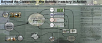
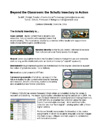

Beyond the Classroom: The Schultz Insectary in Action
A poster presentation at the Council of Library and Information Resources workshop on Managing Digital Assets, Charleston, SC February 17-19, 2005.
A replica of the presentation poster (3000px by 1280px)

The summary handout that accompanied the poster

Return to home